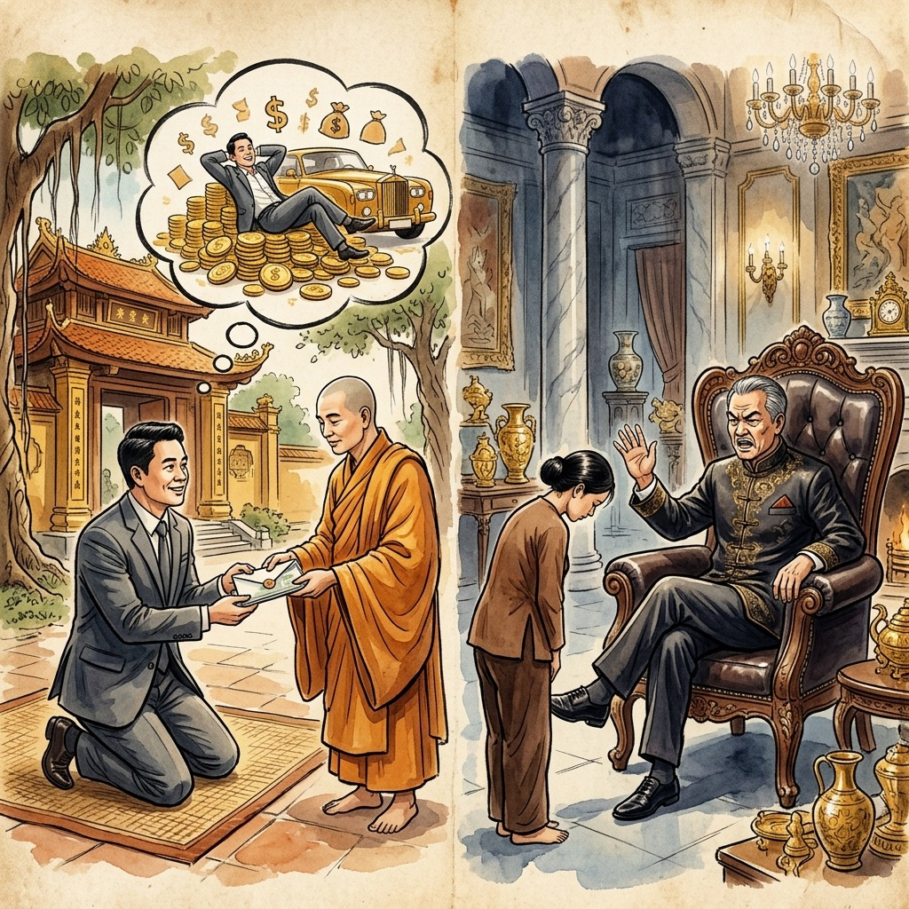
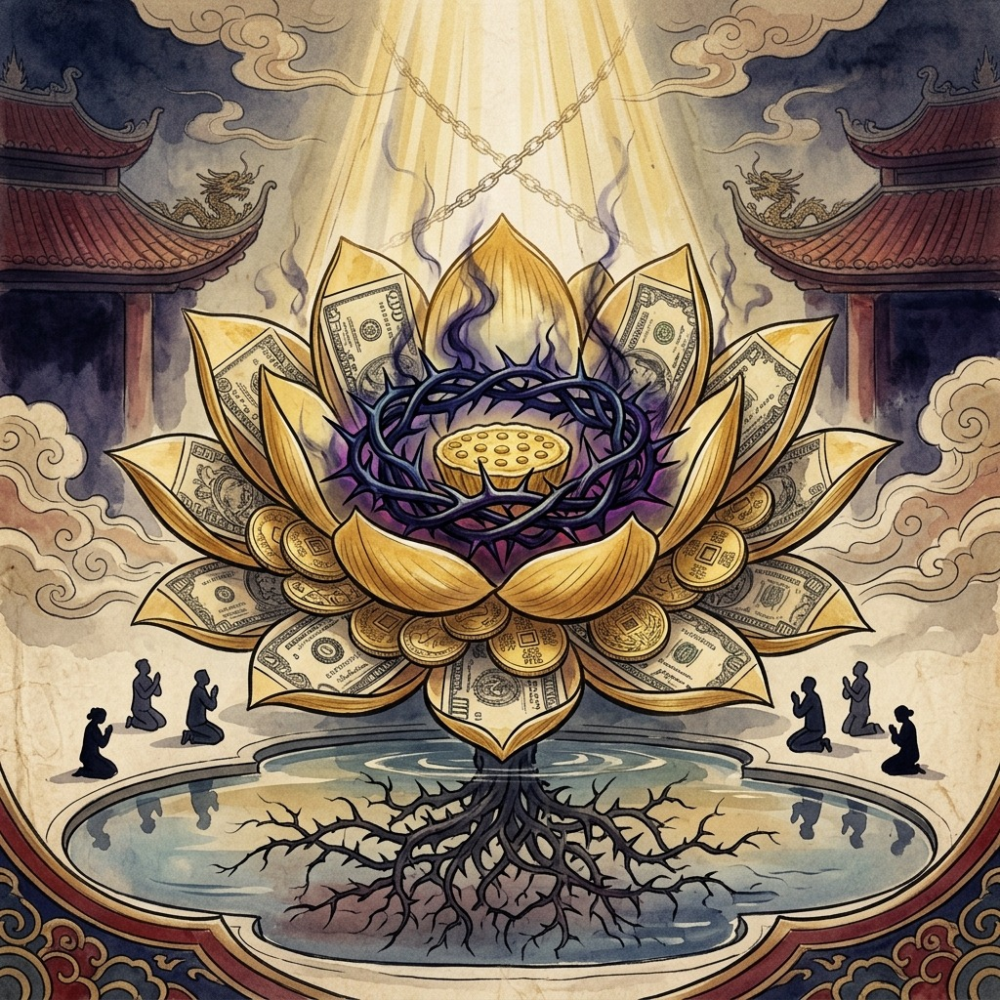
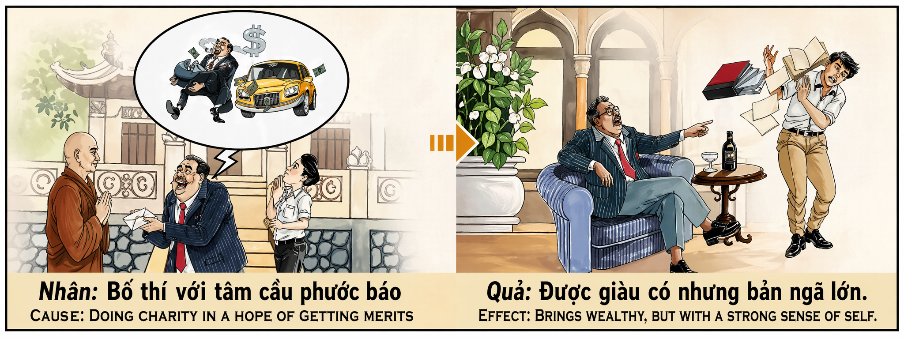

La Limosna Envenenada The Poisoned Alms L'Elemosina Avvelenata 有毒的施舍 الصدقة المسمومة Отравленная милостыня Das vergiftete Almosen L'Aumône Empoisonnée 毒された施し A Esmola Envenenada Bố Thí Nhiễm Độc
"Quien da con la mano derecha para recibir con la izquierda, cosechará oro pero perderá el alma que lo disfrute." "He who gives with the right hand to receive with the left will reap gold but will lose the soul that enjoys it." "Chi dà con la mano destra per ricevere con la sinistra raccoglierà oro ma perderà l'anima che ne gode." “用右手给予而用左手接受的人会收获金子，但会失去享受金子的灵魂。” "من يعطي بيمينه ليأخذ بشماله يحصد ذهبا لكنه يخسر النفس التي تتمتع به." «Тот, кто дает правой рукой, чтобы получить левой, пожнет золото, но потеряет душу, которая наслаждается им.». „Wer mit der rechten Hand gibt, um mit der linken zu empfangen, wird Gold ernten, aber die Seele verlieren, die sich daran erfreut.“ « Celui qui donne de la main droite pour recevoir de la gauche récoltera de l'or mais perdra l'âme qui en jouit. » 「右手で与えて左手で受け取る者は金を刈り取るが、それを享受する魂を失うだろう。」 "Quem dá com a mão direita para receber com a esquerda colherá ouro, mas perderá a alma que o usufrui." "Ai cho bằng tay phải mà nhận bằng tay trái sẽ gặt vàng nhưng sẽ mất đi tâm hồn hưởng thụ."
Existe una forma de generosidad que el universo acepta pero castiga simultáneamente: la caridad condicional. Cuando un hombre dona a un templo, a un pobre o a una causa noble, pero lo hace calculando en secreto el retorno kármico —pensando «si doy esto, recibiré aquello»—, está plantando una semilla que germinará, sí, pero que crecerá envuelta en espinas. El cosmos no puede negar la recompensa de un acto generoso, porque la ley de causa y efecto es ciega e imparcial. Pero tampoco puede purificar la intención corrupta que lo motivó. Así nace el karma más paradójico de todos: la riqueza acompañada de un ego monstruoso.
El mecanismo es de una elegancia cruel: das dinero esperando recibir más, y efectivamente lo recibes. Pero junto con cada moneda que llega, tu ego crece como una sombra que devora la luz. Te conviertes en alguien que mide su valor por lo que posee, que trata a los demás como instrumentos, que confunde el respeto con el miedo que inspira su billetera. Tus empleados te obedecen pero no te respetan. Tu familia te rodea pero no te ama. Tus amigos te buscan pero no te conocen. Es la prisión más sofisticada que existe: una jaula de oro donde el preso es tu propia humanidad.
La tragedia definitiva de la caridad interesada es que roba al donante la única recompensa que realmente vale: la paz interior. Porque quien da para recibir nunca siente la satisfacción profunda del que da por dar. Cada acto de generosidad calculada alimenta una sed que no se puede saciar, un hambre de reconocimiento que crece con cada donación. El rico arrogante termina rodeado de lujo pero vacío de propósito, sentado en un trono de oro pero incapaz de sentir la caricia simple de la gratitud auténtica. Ha comprado todo excepto lo único que no tiene precio: la humildad de un corazón que da sin llevar la cuenta.
There is a form of generosity that the universe simultaneously accepts but punishes: conditional charity. When a man donates to a temple, to a poor person, or to a noble cause, but he does so secretly calculating the karmic return—thinking “if I give this, I will receive that”—he is planting a seed that will germinate, yes, but that will grow wrapped in thorns. The cosmos cannot deny the reward of a generous act, because the law of cause and effect is blind and impartial. But neither can it purify the corrupt intention that motivated it. Thus is born the most paradoxical karma of all: wealth accompanied by a monstrous ego.
The mechanism is cruelly elegant: you give money expecting to receive more, and you actually receive it. But along with each coin that arrives, your ego grows like a shadow that devours the light. You become someone who measures his worth by what he owns, who treats others as instruments, who confuses respect with the fear that his wallet inspires. Your employees obey you but do not respect you. Your family surrounds you but doesn't love you. Your friends are looking for you but they don't know you. It is the most sophisticated prison that exists: a golden cage where the prisoner is your own humanity.
The ultimate tragedy of self-interested charity is that it robs the donor of the only reward that is truly worth it: inner peace. Because those who give to receive never feel the deep satisfaction of those who give for the sake of giving. Each act of calculated generosity feeds a thirst that cannot be quenched, a hunger for recognition that grows with each donation. The arrogant rich man ends up surrounded by luxury but void of purpose, sitting on a golden throne but unable to feel the simple caress of authentic gratitude. He has bought everything except the one thing that is priceless: the humility of a heart that gives without keeping count.
Esiste una forma di generosità che l'universo accetta ma allo stesso tempo punisce: la carità condizionale. Quando un uomo dona a un tempio, a una persona povera, o a una causa nobile, ma lo fa calcolando segretamente il ritorno karmico – pensando “se do questo, riceverò quello” – sta piantando un seme che germoglierà, sì, ma che crescerà avvolto nelle spine. Il cosmo non può negare la ricompensa di un atto generoso, perché la legge di causa ed effetto è cieca e imparziale. Ma non può neppure purificare l’intenzione corrotta che l’ha motivata. Nasce così il karma più paradossale di tutti: la ricchezza accompagnata da un ego mostruoso.
Il meccanismo è crudelmente elegante: dai soldi aspettandoti di riceverne di più, e in realtà lo ricevi. Ma insieme ad ogni moneta che arriva, il tuo ego cresce come un'ombra che divora la luce. Diventi qualcuno che misura il suo valore in base a ciò che possiede, che tratta gli altri come strumenti, che confonde il rispetto con la paura che ispira il suo portafoglio. I tuoi dipendenti ti obbediscono ma non ti rispettano. La tua famiglia ti circonda ma non ti ama. I tuoi amici ti cercano ma non ti conoscono. È la prigione più sofisticata che esista: una gabbia dorata dove prigioniera è la tua stessa umanità.
La tragedia finale della carità egoistica è che priva il donatore dell’unica ricompensa che ne vale veramente la pena: la pace interiore. Perché chi dà per ricevere non prova mai la profonda soddisfazione di chi dà per il gusto di dare. Ogni atto di generosità calcolata alimenta una sete che non può essere placata, una fame di riconoscimento che cresce con ogni donazione. Il ricco arrogante finisce per ritrovarsi circondato dal lusso ma privo di scopo, seduto su un trono d'oro ma incapace di sentire la semplice carezza di un'autentica gratitudine. Ha comprato tutto tranne l'unica cosa che non ha prezzo: l'umiltà di un cuore che dona senza contare.
有一种形式的慷慨，宇宙同时接受但惩罚：有条件的慈善。当一个人向寺庙、穷人或崇高事业捐款时，他会暗自计算业力回报——心想“如果我给予这个，我就会收到那个”——他正在种下一颗会发芽的种子，是的，但它会被荆棘包裹着生长。宇宙不能否认慷慨行为的回报，因为因果法则是盲目而公正的。但它也无法净化其动机的腐败意图。由此诞生了最矛盾的业力：财富伴随着可怕的自我。
这个机制极其优雅：你付出金钱，期望收到更多，而你实际上收到了它。但随着每一枚硬币的到来，你的自我就像吞噬光明的阴影一样成长。你会成为一个用自己拥有的东西来衡量自己的价值的人，一个将他人视为工具的人，一个将尊重与钱包引发的恐惧混为一谈的人。你的员工服从你，但不尊重你。你的家人围绕着你，但并不爱你。您的朋友正在寻找您，但他们不认识您。这是现存最复杂的监狱：一个金色的笼子，里面的囚犯就是你自己的人性。
自私慈善的最终悲剧在于，它剥夺了捐赠者唯一真正值得的回报：内心的平静。因为那些为了接受而给予的人永远不会感受到那些为了给予而给予的人所带来的深深的满足。每一次精心策划的慷慨行为都会满足一种无法抑制的渴望，一种对认可的渴望随着每次捐赠而增长。傲慢的富翁最终被奢华包围，却毫无目标，坐在金色的王座上，却无法感受到真诚感激的简单爱抚。他买下了一切，除了一件无价的东西：一颗不计较地给予的谦卑之心。
هناك شكل من أشكال الكرم يقبله الكون في نفس الوقت ولكنه يعاقب عليه: الصدقة المشروطة. عندما يتبرع رجل لمعبد، أو لشخص فقير، أو لقضية نبيلة، لكنه يفعل ذلك سرًا حاسبًا عائد الكارما - معتقدًا "إذا أعطيت هذا، فسوف أحصل على ذاك" - فهو يزرع بذرة سوف تنبت، نعم، ولكنها سوف تنمو ملفوفة في الأشواك. لا يمكن للكون أن ينكر مكافأة العمل الكريم، لأن قانون السبب والنتيجة أعمى وغير متحيز. لكنها لا تستطيع أيضاً تطهير النية الفاسدة التي حفزتها. وهكذا تولد الكارما الأكثر تناقضًا على الإطلاق: الثروة المصحوبة بالأنا الوحشية.
الآلية أنيقة للغاية: أنت تعطي المال متوقعًا أن تحصل على المزيد، وتحصل عليه بالفعل. ولكن مع كل عملة تصل، تنمو غرورك مثل الظل الذي يلتهم الضوء. تصبح شخصًا يقيس قيمته بما يملكه، ويعامل الآخرين كأدوات، ويخلط بين الاحترام والخوف الذي تثيره محفظته. موظفوك يطيعونك ولكن لا يحترمونك. عائلتك تحيط بك ولكنها لا تحبك. أصدقاؤك يبحثون عنك لكنهم لا يعرفونك. إنه السجن الأكثر تطورًا على الإطلاق: قفص ذهبي حيث السجين هو إنسانيتك.
إن المأساة الكبرى للأعمال الخيرية المبنية على المصلحة الذاتية هي أنها تحرم المتبرع من المكافأة الوحيدة التي تستحق العناء: السلام الداخلي. لأن من يعطي ليأخذ لا يشعر أبدًا بالرضا العميق الذي يشعر به من يعطي من أجل العطاء. كل عمل من أعمال الكرم المحسوب يغذي عطشًا لا يمكن إرواؤه، وجوعًا للاعتراف الذي ينمو مع كل تبرع. ينتهي الأمر بالرجل الغني المتغطرس محاطًا بالترف ولكن بلا هدف، ويجلس على عرش ذهبي لكنه غير قادر على الشعور بمداعبة الامتنان الحقيقي. لقد اشترى كل شيء إلا الشيء الوحيد الذي لا يقدر بثمن: تواضع القلب الذي يعطي بلا حساب.
Существует форма щедрости, которую Вселенная одновременно принимает, но наказывает: условная благотворительность. Когда человек делает пожертвование в храм, бедному человеку или на благородное дело, но делает это тайно, рассчитывая кармическую отдачу – думая: «Если я отдам это, я получу то», – он сажает семя, которое прорастет, да, но оно вырастет, окутанное шипами. Космос не может отрицать награду за щедрый поступок, потому что закон причины и следствия слеп и беспристрастен. Но оно также не может очистить коррумпированное намерение, которое его мотивировало. Так рождается самая парадоксальная карма из всех: богатство, сопровождаемое чудовищным эго.
Механизм безжалостно элегантен: вы даете деньги, ожидая получить больше, и фактически получаете их. Но вместе с каждой поступающей монетой ваше эго растет, как тень, пожирающая свет. Вы становитесь тем, кто измеряет свою ценность тем, что у него есть, кто обращается с другими как с инструментами, кто путает уважение со страхом, который внушает его кошелек. Ваши сотрудники подчиняются вам, но не уважают вас. Ваша семья окружает вас, но не любит вас. Твои друзья ищут тебя, но они тебя не знают. Это самая изощренная тюрьма из всех существующих: золотая клетка, узником которой является ваше собственное человечество.
Самая большая трагедия корыстной благотворительности заключается в том, что она лишает жертвователя единственной награды, которая действительно того стоит: внутреннего покоя. Потому что те, кто дает, чтобы получить, никогда не испытывают глубокого удовлетворения, как те, кто дает ради того, чтобы давать. Каждый акт расчетливой щедрости питает неутолимую жажду, жажду признания, которая растет с каждым пожертвованием. Высокомерный богач оказывается окруженным роскошью, но лишенным цели, сидящим на золотом троне, но неспособным почувствовать простую ласку подлинной благодарности. Он купил все, кроме одной бесценной вещи: смирения сердца, которое дает, не считая.
Es gibt eine Form der Großzügigkeit, die das Universum gleichzeitig akzeptiert, aber bestraft: bedingte Nächstenliebe. Wenn ein Mann für einen Tempel, für einen armen Menschen oder für eine edle Sache spendet, dies aber insgeheim mit der Berechnung der karmischen Rendite tut – indem er denkt: „Wenn ich dies gebe, werde ich jenes erhalten“ – pflanzt er einen Samen, der keimt, ja, der aber in Dornen gehüllt wächst. Der Kosmos kann den Lohn einer großzügigen Tat nicht leugnen, denn das Gesetz von Ursache und Wirkung ist blind und unparteiisch. Aber es kann auch nicht die korrupte Absicht reinigen, die es motiviert hat. So entsteht das paradoxste Karma von allen: Reichtum, begleitet von einem monströsen Ego.
Der Mechanismus ist grausam elegant: Man gibt Geld in der Erwartung, mehr zu bekommen, und erhält es tatsächlich. Aber mit jeder Münze, die ankommt, wächst Ihr Ego wie ein Schatten, der das Licht verschlingt. Sie werden zu jemandem, der seinen Wert an dem misst, was er besitzt, der andere wie Instrumente behandelt, der Respekt mit der Angst verwechselt, die sein Geldbeutel hervorruft. Ihre Mitarbeiter gehorchen Ihnen, respektieren Sie aber nicht. Deine Familie umgibt dich, liebt dich aber nicht. Deine Freunde suchen dich, kennen dich aber nicht. Es ist das raffinierteste Gefängnis, das es gibt: ein goldener Käfig, in dem der Gefangene Ihre eigene Menschlichkeit ist.
Die ultimative Tragödie eigennütziger Wohltätigkeit besteht darin, dass sie dem Spender die einzige Belohnung nimmt, die es wirklich wert ist: den inneren Frieden. Denn wer gibt, um zu empfangen, verspürt nie die tiefe Befriedigung derer, die um des Gebens willen geben. Jeder Akt kalkulierter Großzügigkeit nährt einen unstillbaren Durst, einen Hunger nach Anerkennung, der mit jeder Spende wächst. Der arrogante reiche Mann ist schließlich von Luxus umgeben, aber ziellos, sitzt auf einem goldenen Thron, ist aber nicht in der Lage, die einfache Liebkosung authentischer Dankbarkeit zu spüren. Er hat alles gekauft, bis auf das Eine, das unbezahlbar ist: die Demut eines Herzens, das gibt, ohne zu zählen.
Il existe une forme de générosité que l’univers accepte mais punit à la fois : la charité conditionnelle. Lorsqu’un homme fait un don à un temple, à un pauvre ou à une noble cause, mais qu’il le fait en calculant secrètement le retour karmique – en pensant « si je donne ceci, je recevrai cela » – il plante une graine qui germera, oui, mais qui poussera enveloppée d’épines. Le cosmos ne peut nier la récompense d’un acte généreux, car la loi de cause à effet est aveugle et impartiale. Mais il ne peut pas non plus purifier l’intention corrompue qui l’a motivé. Ainsi naît le karma le plus paradoxal de tous : une richesse accompagnée d’un ego monstrueux.
Le mécanisme est d’une élégance cruelle : vous donnez de l’argent en espérant recevoir davantage, et vous le recevez réellement. Mais à chaque pièce de monnaie qui arrive, votre ego grandit comme une ombre qui dévore la lumière. Vous devenez quelqu'un qui mesure sa valeur à ce qu'il possède, qui traite les autres comme des instruments, qui confond le respect avec la peur qu'inspire son portefeuille. Vos employés vous obéissent mais ne vous respectent pas. Votre famille vous entoure mais ne vous aime pas. Vos amis vous recherchent mais ils ne vous connaissent pas. C'est la prison la plus sophistiquée qui existe : une cage dorée où le prisonnier est votre propre humanité.
La tragédie ultime de la charité intéressée est qu’elle prive le donateur de la seule récompense qui en vaut vraiment la peine : la paix intérieure. Parce que celui qui donne pour recevoir ne ressent jamais la profonde satisfaction de celui qui donne pour le plaisir de donner. Chaque acte de générosité calculée nourrit une soif qui ne peut être étanchée, une soif de reconnaissance qui grandit à chaque don. L’homme riche et arrogant se retrouve entouré de luxe mais sans but, assis sur un trône d’or mais incapable de ressentir la simple caresse d’une authentique gratitude. Il a tout acheté sauf une chose qui n'a pas de prix : l'humilité d'un cœur qui donne sans compter.
宇宙が受け入れると同時に罰する寛大さの形があります。それは、条件付きの慈善です。人が寺院や貧しい人、あるいは高貴な大義に寄付をするとき、その行為は密かにカルマ的見返りを計算し、「これを寄付すれば、あれを受け取るだろう」と考えながら行うのですが、その人は発芽する種を植えていることになりますが、それは棘に包まれて成長することになります。原因と結果の法則は盲目的かつ公平であるため、宇宙は寛大な行為の報酬を否定することはできません。しかし、それを動機づけた腐敗した意図を浄化することもできません。こうして、すべてのカルマの中で最も逆説的なカルマが生まれます。それは、巨大なエゴを伴う富です。
このメカニズムは残酷なほどエレガントです。あなたはより多くを受け取ることを期待してお金を与え、そして実際にそれを受け取ります。しかし、コインが届くたびに、あなたのエゴは光を飲み込む影のように成長していきます。自分の価値を自分の所有物で測り、他人を道具として扱い、尊敬と財布が引き起こす恐怖を混同する人になってしまいます。従業員はあなたに従いますが、尊重しません。家族はあなたを取り囲んでいますが、あなたを愛していません。あなたの友達はあなたを探していますが、あなたのことを知りません。それは存在する最も洗練された刑務所です。囚人があなた自身の人間性である黄金の檻です。
私利私欲的な慈善活動の究極の悲劇は、寄付者から真に価値のある唯一の報酬である心の平安を奪うことです。なぜなら、受け取るために与える人は、与えるために与える人のような深い満足感を決して感じないからです。計算された寛大な行為のひとつひとつが、癒すことのできない渇きを生み出し、寄付をするたびに認められることへの渇望が高まります。傲慢な金持ちは、贅沢に囲まれても目的を失い、黄金の玉座に座っていても、本物の感謝の単純な愛撫を感じることができません。彼はただ一つの貴重なもの、数えることを気にせずに与える謙虚な心を除いて、すべてを買いました。
Existe uma forma de generosidade que o universo simultaneamente aceita, mas pune: a caridade condicional. Quando um homem doa para um templo, para um pobre ou para uma causa nobre, mas o faz calculando secretamente o retorno cármico – pensando “se eu der isso, receberei aquilo” – ele está plantando uma semente que germinará, sim, mas que crescerá envolta em espinhos. O cosmos não pode negar a recompensa de um ato generoso, porque a lei de causa e efeito é cega e imparcial. Mas também não pode purificar a intenção corrupta que a motivou. Assim nasce o carma mais paradoxal de todos: a riqueza acompanhada de um ego monstruoso.
O mecanismo é cruelmente elegante: você dá dinheiro esperando receber mais, e na verdade o recebe. Mas junto com cada moeda que chega, o seu ego cresce como uma sombra que devora a luz. Você se torna alguém que mede seu valor pelo que possui, que trata os outros como instrumentos, que confunde respeito com o medo que sua carteira inspira. Seus funcionários obedecem, mas não o respeitam. Sua família o cerca, mas não o ama. Seus amigos estão procurando por você, mas não o conhecem. É a prisão mais sofisticada que existe: uma jaula dourada onde o prisioneiro é a sua própria humanidade.
A tragédia final da caridade egoísta é que ela rouba do doador a única recompensa que realmente vale a pena: a paz interior. Porque quem dá para receber nunca sente a profunda satisfação de quem dá por dar. Cada ato de generosidade calculada alimenta uma sede que não pode ser saciada, uma fome de reconhecimento que cresce a cada doação. O rico arrogante acaba rodeado de luxo mas sem propósito, sentado num trono de ouro mas incapaz de sentir a simples carícia da gratidão autêntica. Ele comprou tudo, exceto uma coisa que não tem preço: a humildade de um coração que dá sem contar.
Có một dạng hào phóng mà vũ trụ đồng loạt chấp nhận nhưng lại trừng phạt: lòng từ thiện có điều kiện. Khi một người quyên góp cho một ngôi chùa, cho một người nghèo, hoặc cho một mục đích cao cả, nhưng anh ta lại bí mật tính toán quả báo – nghĩ rằng “nếu tôi cho cái này, tôi sẽ nhận cái kia” – thì anh ta đang gieo một hạt giống sẽ nảy mầm, đúng vậy, nhưng nó sẽ mọc lên trong bụi gai. Vũ trụ không thể phủ nhận phần thưởng của một hành động hào phóng, bởi luật nhân quả là mù quáng và vô tư. Nhưng nó cũng không thể thanh tẩy được ý định đồi bại đã thúc đẩy nó. Từ đó sinh ra nghiệp nghịch lý nhất: sự giàu có đi kèm với một bản ngã quái dị.
Cơ chế này rất tao nhã: bạn đưa tiền với mong muốn nhận được nhiều hơn và thực sự bạn nhận được nó. Nhưng cùng với mỗi đồng tiền đến, cái tôi của bạn lớn dần lên như một cái bóng nuốt chửng ánh sáng. Bạn trở thành người đo lường giá trị của anh ta bằng những gì anh ta sở hữu, coi người khác như công cụ, nhầm lẫn sự tôn trọng với nỗi sợ hãi mà ví tiền của anh ta gây ra. Nhân viên của bạn tuân theo bạn nhưng không tôn trọng bạn. Gia đình vây quanh bạn nhưng không yêu thương bạn. Bạn bè của bạn đang tìm kiếm bạn nhưng họ không biết bạn. Đó là nhà tù phức tạp nhất còn tồn tại: một chiếc lồng vàng nơi tù nhân chính là nhân loại của bạn.
Bi kịch cuối cùng của hoạt động từ thiện tư lợi là nó cướp đi phần thưởng duy nhất thực sự xứng đáng của người hiến tặng: sự bình yên nội tâm. Bởi vì người cho đi để nhận lại không bao giờ cảm nhận được sự thỏa mãn sâu sắc như người cho đi vì cho đi. Mỗi hành động hào phóng có tính toán đều nuôi dưỡng một cơn khát không thể nguôi ngoai, cơn đói được công nhận ngày càng lớn dần theo mỗi khoản đóng góp. Người đàn ông giàu có kiêu ngạo cuối cùng bị bao quanh bởi sự xa hoa nhưng vô mục đích, ngồi trên ngai vàng nhưng không thể cảm nhận được sự vuốt ve đơn giản của lòng biết ơn đích thực. Ngài đã mua tất cả mọi thứ ngoại trừ một thứ vô giá: lòng khiêm nhường của một trái tim cho đi không đếm xỉa.
El Templo del Señor Khanh
The Temple of Lord Khanh
Il Tempio di Lord Khanh
汗勋爵寺庙
معبد اللورد خانه
Храм Лорда Хана
Der Tempel von Lord Khanh
Le Temple du Seigneur Khanh
カーン卿の寺院
O Templo do Senhor Khanh
Đền thờ chúa Khánh
En la provincia de Quảng Nam vivía un comerciante llamado Khanh, dueño de la mayor flota pesquera de la costa. Cada luna llena, Khanh subía al templo del monte con una ofrenda espectacular: sacos de arroz, telas de seda, sobres gruesos de dinero. Los monjes lo recibían con reverencia, los aldeanos murmuraban con admiración. Pero nadie sabía lo que Khanh susurraba cada vez que depositaba su ofrenda ante el altar dorado: «Con este arroz me pagarás diez barcos más. Con esta seda me darás salud para cien años. Con este dinero me convertirás en el hombre más poderoso de toda la provincia».
Y el universo, que es justo pero no es tonto, le concedió exactamente lo que pedía. En cinco años, Khanh multiplicó su fortuna por veinte. Compró tierras, construyó palacios, contrató a cien sirvientes. Pero con cada barco nuevo, su mirada se endurecía un poco más. Con cada terreno adquirido, su voz se hacía más cortante. Con cada sirviente contratado, su corazón perdía un grado de temperatura. Empezó a hablar de sí mismo en tercera persona: «El señor Khanh no espera, el señor Khanh no repite las cosas dos veces». Sus hijos aprendieron a temerlo antes que a amarlo. Su esposa dejó de hablarle por las noches. Los monjes del templo, al verlo llegar, ya no sentían gratitud sino una tristeza antigua y silenciosa.
Un día de tormenta, un pescador viejo llamado Bình —el más pobre del pueblo, que comía lo que el mar le dejaba y dormía bajo su barca volcada— encontró a un niño ahogándose en el río crecido. Sin pensarlo, se lanzó al agua helada y lo salvó arriesgando su propia vida. Cuando llevó al niño empapado a la aldea, descubrió que era el nieto menor de Khanh. El comerciante, al enterarse, mandó llamar a Bình a su palacio. «¿Cuánto quieres por haberlo salvado?», le preguntó desde su sillón de cuero, sin levantarse. Bình lo miró con unos ojos tan limpios que parecían dos ventanas al cielo, y respondió: «Señor, yo no salvé a su nieto para recibir algo. Lo salvé porque se estaba ahogando. Si yo hubiera cobrado, habría sido un negocio. Y la vida de un niño no es un negocio».
Khanh se quedó paralizado. En treinta años de caridad calculada, nadie le había mostrado lo que era dar sin esperar. Las palabras de Bình le atravesaron el pecho como una flecha de luz: comprendió de golpe que todas sus donaciones al templo habían sido contratos disfrazados de plegarias, inversiones disfrazadas de ofrendas. Había comprado su fortuna, pero había vendido su capacidad de amar sin condiciones. Esa noche, Khanh bajó al puerto solo, se sentó junto a la barca volcada de Bình y lloró hasta que las estrellas se apagaron. Al amanecer, entregó la mitad de su fortuna al pueblo —sin contratos, sin testigos, sin esperar nada— y pidió a Bình que le enseñara a pescar. No para ganarse la vida, sino para aprender a dar lo que el mar le regalaba sin ponerle precio. Murió años después siendo un hombre modesto, pero por primera vez en su vida, murió siendo un hombre libre.
In the province of Quảng Nam lived a merchant named Khanh, owner of the largest fishing fleet on the coast. Every full moon, Khanh would go up to the temple on the mountain with a spectacular offering: bags of rice, silk cloth, thick envelopes of money. The monks received him with reverence, the villagers murmured with admiration. But no one knew what Khanh whispered every time he placed his offering before the golden altar: “With this rice you will pay me ten more ships. With this silk you will give me health for a hundred years. With this money you will make me the most powerful man in the entire province.
And the universe, which is fair but not stupid, granted him exactly what he asked for. In five years, Khanh multiplied his fortune twenty-fold. He bought land, built palaces, hired a hundred servants. But with each new ship, his gaze hardened a little more. With each piece of ground gained, his voice became sharper. With each hired servant, his heart lost a degree of temperature. He began to talk about himself in the third person: "Mr. Khanh doesn't wait, Mr. Khanh doesn't repeat things twice." His children learned to fear him rather than love him. His wife stopped talking to him at night. The monks of the temple, upon seeing him arrive, no longer felt gratitude but an ancient and silent sadness.
One stormy day, an old fisherman named Bình—the poorest in the village, who ate what the sea gave him and slept under his overturned boat—found a child drowning in the swollen river. Without thinking, he jumped into the icy water and saved him, risking his own life. When he brought the soaked boy back to the village, he discovered that he was Khanh's youngest grandson. The merchant, upon finding out, sent for Bình to his palace. "How much do you want for saving him?" he asked from his leather chair, without getting up. Bình looked at him with eyes so clear that they seemed like two windows to heaven, and replied: «Sir, I did not save your grandson to receive something. I saved him because he was drowning. If I had charged, it would have been a business. And the life of a child is not a business.
Khanh froze. In thirty years of calculated charity, no one had shown him what it was like to give without waiting. Bình's words pierced his chest like an arrow of light: he suddenly realized that all his donations to the temple had been contracts disguised as prayers, investments disguised as offerings. He had bought his fortune, but he had sold his ability to love without conditions. That night, Khanh went down to the harbor alone, sat next to Bình's overturned boat, and cried until the stars went out. At dawn, he gave half of his fortune to the people—without contracts, without witnesses, without expecting anything—and asked Bình to teach him how to fish. Not to earn a living, but to learn to give what the sea gave him without putting a price on it. He died years later a modest man, but for the first time in his life, he died a free man.
Nella provincia di Quảng Nam viveva un mercante di nome Khanh, proprietario della più grande flotta da pesca della costa. Ogni luna piena, Khanh saliva al tempio sulla montagna con un'offerta spettacolare: sacchi di riso, tessuti di seta, spesse buste piene di denaro. I monaci lo accolsero con reverenza, gli abitanti del villaggio mormorarono con ammirazione. Ma nessuno sapeva cosa sussurrava Khanh ogni volta che poneva la sua offerta davanti all'altare d'oro: "Con questo riso mi pagherai altre dieci navi. Con questa seta mi darai salute per cento anni. Con questo denaro mi renderai l'uomo più potente dell'intera provincia. "
E l'universo, che è giusto ma non stupido, gli ha concesso esattamente quello che aveva chiesto. In cinque anni, Khanh moltiplicò di venti volte la sua fortuna. Comprò terreni, costruì palazzi, assunse un centinaio di servi. Ma con ogni nuova nave, il suo sguardo si induriva sempre di più. Ad ogni pezzo di terreno guadagnato, la sua voce diventava più acuta. Con ogni servitore salariato, il suo cuore perdeva un certo grado di temperatura. Iniziò a parlare di sé in terza persona: "Il signor Khanh non aspetta, il signor Khanh non ripete le cose due volte". I suoi figli hanno imparato a temerlo piuttosto che ad amarlo. Sua moglie smetteva di parlargli di notte. I monaci del tempio, vedendolo arrivare, non provarono più gratitudine ma un'antica e silenziosa tristezza.
Un giorno di tempesta, un vecchio pescatore di nome Bình – il più povero del villaggio, che mangiava ciò che il mare gli dava e dormiva sotto la sua barca rovesciata – trovò un bambino che stava annegando nel fiume in piena. Senza pensarci, si gettò nell'acqua gelata e lo salvò, rischiando la vita. Quando riportò il ragazzo fradicio al villaggio, scoprì che era il nipote più giovane di Khanh. Il mercante, scopertolo, mandò a chiamare Bình al suo palazzo. "Quanto vuoi per salvarlo?" chiese dalla sua poltrona di pelle, senza alzarsi. Bình lo guardò con occhi così limpidi che sembravano due finestre sul cielo, e rispose: «Signore, non ho salvato tuo nipote per ricevere qualcosa. L'ho salvato perché stava annegando. Se avessi fatto pagare sarebbe stato un affare. E la vita di un bambino non è un business.
Khanh si irrigidì. In trent'anni di carità calcolata, nessuno gli aveva mostrato cosa volesse dire donare senza aspettare. Le parole di Bình gli trafissero il petto come una freccia di luce: improvvisamente si rese conto che tutte le sue donazioni al tempio erano stati contratti travestiti da preghiere, investimenti travestiti da offerte. Aveva comprato la sua fortuna, ma aveva venduto la sua capacità di amare senza condizioni. Quella notte, Khanh scese al porto da solo, si sedette accanto alla barca rovesciata di Bình e pianse finché le stelle non si spensero. All'alba donò metà della sua fortuna al popolo – senza contratti, senza testimoni, senza aspettarsi nulla – e chiese a Bình di insegnargli a pescare. Non per guadagnarsi da vivere, ma per imparare a dare quello che il mare gli ha dato senza dargli un prezzo. Morì anni dopo da uomo modesto, ma per la prima volta nella sua vita morì da uomo libero.
在广南省住着一位名叫 Khanh 的商人，他拥有沿海最大的捕鱼船队。每到满月，Khanh都会带着精美的供品去山上的寺庙：一袋袋米、丝绸布、厚厚的钱信封。僧侣们恭敬地接待他，村民们议论纷纷，赞叹不已。但没有人知道，每当Khanh将贡品放在金坛前时，他都会低语道：“用这些大米，你将给我多付十艘船。用这些丝绸，你将使我健康一百年。用这些钱，你将使我成为全省最有权势的人。”
而公平但并不愚蠢的宇宙，确实满足了他的要求。五年内，Khanh 的财富增加了二十倍。他买了土地，建造了宫殿，雇用了一百名仆人。但随着每一艘新船的出现，他的目光都变得更加坚定。随着每一步的进展，他的声音都变得更加尖锐。随着每一个雇仆的出现，他的心都失去了一丝温度。他开始用第三人称谈论自己：“汗先生不会等待，汗先生不会重复事情两次。”他的孩子们学会了害怕他而不是爱他。 His wife stopped talking to him at night.寺里的僧人见他到来，心中不再是感激，而是一种古老而无声的悲伤。
一个暴风雨天，一位名叫平的老渔夫——村里最穷的人，吃着大海给他的食物，睡在翻倒的船下——发现一个孩子淹死在涨水的河里。他不假思索地跳进冰冷的水中救了他，冒着生命危险。当他把浑身湿透的男孩带回村子时，他发现他是Khanh最小的孙子。商人得知后，派人将平接到他的宫殿。 “你要多少钱才能救他？”他坐在皮椅上问道，没有站起来。 Bình用清澈的眼睛看着他，就像两扇通往天堂的窗户，回答道：“先生，我救你的孙子并不是为了得到什么。我救了他，因为他溺水了。如果我收费的话，那就是一桩生意了。孩子的生活不是生意。
汗愣住了。在三十年有计划的慈善事业中，没有人向他展示过不等待就给予的滋味。 Bình的话像一道光箭刺穿了他的胸膛：他突然意识到，他对寺庙的所有捐款都是伪装成祈祷的合同，伪装成供奉的投资。他买了自己的财富，却出卖了自己无条件爱的能力。那天晚上，Khanh独自来到港口，坐在Bình翻倒的船旁边，哭到星星都灭了。黎明时分，他将一半的财产捐给了人民——没有合同，没有见证人，没有期待任何事情——并请平教他如何钓鱼。不是为了谋生，而是为了学会给予大海所给予他的东西，而不是标价。多年后，他以一个谦虚的人的身份去世，但这是他一生中第一次以自由的身份去世。
في مقاطعة كوانج نام عاش تاجر اسمه خانه، صاحب أكبر أسطول صيد على الساحل. في كل اكتمال قمر، كان خانه يصعد إلى المعبد الموجود على الجبل ومعه عرض مذهل: أكياس من الأرز، وقماش حريري، ومظاريف سميكة من المال. استقبله الرهبان بإجلال، وتذمر القرويون بإعجاب. لكن لم يعرف أحد ما كان خانه يهمس به في كل مرة يضع قربانه أمام المذبح الذهبي: "بهذا الأرز ستدفع لي عشر سفن أخرى. بهذا الحرير ستمنحني الصحة لمائة عام. بهذا المال ستجعلني أقوى رجل في المقاطعة بأكملها.
والكون العادل، ولكن ليس الغبي، منحه بالضبط ما طلبه. وفي خمس سنوات، ضاعف خانه ثروته عشرين ضعفًا. فاشترى أرضًا، وبنى قصورًا، واستأجر مائة خادم. ولكن مع كل سفينة جديدة، كانت نظرته تصلب أكثر قليلاً. ومع كل قطعة أرض يكتسبها، أصبح صوته أكثر حدة. ومع كل أجير كان قلبه يفقد درجة من الحرارة. بدأ يتحدث عن نفسه بضمير الغائب: "السيد خانه لا ينتظر، السيد خانه لا يكرر الأشياء مرتين." تعلم أطفاله أن يخافوه بدلاً من أن يحبوه. توقفت زوجته عن التحدث معه في الليل. ولم يعد رهبان المعبد، عندما رأوه يصل، يشعرون بالامتنان بل بحزن قديم وصامت.
في أحد الأيام العاصفة، وجد صياد عجوز اسمه بينه - أفقر سكان القرية، يأكل مما أعطاه البحر وينام تحت قاربه المقلوب - طفلاً يغرق في النهر المتدفق. وبدون تفكير، قفز في المياه الجليدية وأنقذه، وخاطر بحياته. عندما أعاد الصبي المنقوع إلى القرية، اكتشف أنه أصغر حفيد خانه. وعندما اكتشف التاجر الأمر، أرسل في طلب بينه إلى قصره. "كم تريد لإنقاذه؟" سأل من على كرسيه الجلدي دون أن يقوم. نظر بينه إليه بعينين واضحتين للغاية بحيث بدت كأنهما نافذتان تطلان على السماء، وأجاب: «سيدي، لم أنقذ حفيدك ليحصل على شيء ما. لقد أنقذته لأنه كان يغرق. لو كنت قد اتهمت، لكان ذلك عملاً تجاريًا. وحياة الطفل ليست عملاً تجاريًا.
تجمد خانه. خلال ثلاثين عامًا من الصدقة المحسوبة، لم يره أحد كيف يعني العطاء دون انتظار. اخترقت كلمات بينه صدره مثل سهم من نور: لقد أدرك فجأة أن كل تبرعاته للمعبد كانت عبارة عن عقود مقنعة في شكل صلوات، واستثمارات مقنعة في شكل قرابين. لقد اشترى ثروته، لكنه باع قدرته على الحب دون شروط. في تلك الليلة، نزل خانه إلى الميناء بمفرده، وجلس بجوار قارب بينه المقلوب، وبكى حتى انطفأت النجوم. عند الفجر، أعطى نصف ثروته للناس - بدون عقود، وبدون شهود، ودون توقع أي شيء - وطلب من بينه أن يعلمه كيفية صيد السمك. ليس ليكسب لقمة عيشه، بل ليتعلم أن يعطي ما أعطاه إياه البحر دون أن يضع له ثمنًا. توفي بعد سنوات رجلاً متواضعاً، لكنه توفي لأول مرة في حياته رجلاً حراً.
В провинции Куангнам жил купец по имени Хан, владелец крупнейшего рыболовного флота на побережье. Каждое полнолуние Кхан поднимался в храм на горе с впечатляющим подношением: мешками риса, шелковой тканью, толстыми конвертами с деньгами. Монахи приняли его с благоговением, жители села роптали с восхищением. Но никто не знал, что шептал Хан каждый раз, когда клал свое подношение перед золотым алтарем: "Этим рисом ты заплатишь мне еще десять кораблей. Этим шелком ты дашь мне здоровье на сто лет. С этими деньгами ты сделаешь меня самым могущественным человеком во всей провинции".
И Вселенная, справедливая, но не глупая, даровала ему именно то, о чем он просил. За пять лет Хан умножил свое состояние в двадцать раз. Он купил землю, построил дворцы, нанял сотню слуг. Но с каждым новым кораблем его взгляд становился все жестче. С каждым завоеванным кусочком земли его голос становился резче. С каждым наемным слугой его сердце теряло температуру. Он начал говорить о себе в третьем лице: «Г-н Кхан не ждет, г-н Кхан не повторяет дважды». Его дети научились бояться его, а не любить. Жена перестала с ним разговаривать по ночам. Монахи храма, увидев его прибытие, почувствовали уже не благодарность, а древнюю и молчаливую печаль.
В один ненастный день старый рыбак по имени Бинь — самый бедный житель деревни, который ел то, что давало ему море, и спал под перевернутой лодкой — нашел тонущего ребенка в разлившейся реке. Недолго думая, он прыгнул в ледяную воду и спас его, рискуя собственной жизнью. Когда он принес промокшего мальчика обратно в деревню, он обнаружил, что он младший внук Хана. Купец, узнав об этом, послал за Биньем в свой дворец. — Сколько ты хочешь за его спасение? — спросил он со своего кожаного кресла, не вставая. Бинь посмотрел на него настолько ясными глазами, что они казались двумя окнами в небо, и ответил: «Сэр, я спас вашего внука не для того, чтобы что-то получить. Я спас его, потому что он тонул. Если бы я взял плату, это был бы бизнес. А жизнь ребенка – это не бизнес.
Хан замер. За тридцать лет расчетливой благотворительности никто не показал ему, что значит давать, не ожидая. Слова Биня пронзили его грудь, как стрела света: он внезапно осознал, что все его пожертвования храму были контрактами, замаскированными под молитвы, инвестициями, замаскированными под пожертвования. Он купил свое состояние, но продал свою способность любить без условий. Той ночью Кхан спустился в гавань один, сел рядом с перевернутой лодкой Бинь и плакал, пока не погасли звезды. На рассвете он отдал людям половину своего состояния — без контрактов, без свидетелей, ничего не ожидая — и попросил Бинь научить его ловить рыбу. Не зарабатывать на жизнь, а научиться отдавать то, что дало ему море, не назначая за это цену. Спустя годы он умер скромным человеком, но впервые в жизни умер свободным человеком.
In der Provinz Quảng Nam lebte ein Kaufmann namens Khanh, Besitzer der größten Fischereiflotte an der Küste. Bei jedem Vollmond ging Khanh mit einer spektakulären Opfergabe zum Tempel auf dem Berg: Reissäcke, Seidentücher und dicke Geldumschläge. Die Mönche empfingen ihn mit Ehrfurcht, die Dorfbewohner murmelten voller Bewunderung. Aber niemand wusste, was Khanh jedes Mal flüsterte, wenn er seine Opfergabe vor dem goldenen Altar niederlegte: „Mit diesem Reis bezahlst du mir zehn weitere Schiffe. Mit dieser Seide gibst du mir Gesundheit für hundert Jahre. Mit diesem Geld machst du mich zum mächtigsten Mann in der gesamten Provinz.“
Und das Universum, das gerecht, aber nicht dumm ist, gewährte ihm genau das, was er verlangte. Innerhalb von fünf Jahren vervielfachte Khanh sein Vermögen um das Zwanzigfache. Er kaufte Land, baute Paläste und stellte hundert Diener ein. Aber mit jedem neuen Schiff wurde sein Blick etwas härter. Mit jedem gewonnenen Stück Boden wurde seine Stimme schärfer. Mit jedem angeheuerten Diener verlor sein Herz ein gewisses Maß an Temperatur. Er begann in der dritten Person über sich selbst zu sprechen: „Herr Khanh wartet nicht, Herr Khanh wiederholt Dinge nicht zweimal.“ Seine Kinder lernten, ihn zu fürchten, anstatt ihn zu lieben. Seine Frau hörte nachts auf, mit ihm zu reden. Als die Mönche des Tempels seine Ankunft sahen, verspürten sie keine Dankbarkeit mehr, sondern eine uralte und stille Traurigkeit.
An einem stürmischen Tag fand ein alter Fischer namens Bình – der Ärmste im Dorf, der aß, was das Meer ihm gab, und unter seinem umgestürzten Boot schlief – ein Kind, das im angeschwollenen Fluss ertrank. Ohne nachzudenken sprang er ins eisige Wasser und rettete ihn, wobei er sein eigenes Leben riskierte. Als er den durchnässten Jungen ins Dorf zurückbrachte, stellte er fest, dass es sich um Khanhs jüngsten Enkel handelte. Als der Kaufmann davon erfuhr, schickte er Bình zu seinem Palast. „Wie viel willst du, um ihn zu retten?“ fragte er von seinem Ledersessel aus, ohne aufzustehen. Bình sah ihn mit Augen an, die so klar waren, dass sie wie zwei Fenster zum Himmel wirkten, und antwortete: „Herr, ich habe Ihren Enkel nicht gerettet, um etwas zu erhalten.“ Ich habe ihn gerettet, weil er ertrank. Wenn ich eine Gebühr erhoben hätte, wäre es ein Geschäft gewesen. Und das Leben eines Kindes ist kein Geschäft.
Khanh erstarrte. In dreißig Jahren kalkulierter Wohltätigkeit hatte ihm niemand gezeigt, wie es ist, zu geben, ohne zu warten. Bìnhs Worte durchbohrten seine Brust wie ein Lichtpfeil: Plötzlich wurde ihm klar, dass alle seine Spenden an den Tempel als Gebete getarnte Verträge und als Opfergaben getarnte Investitionen gewesen waren. Er hatte sein Vermögen gekauft, aber seine Fähigkeit, bedingungslos zu lieben, verkauft. In dieser Nacht ging Khanh allein zum Hafen, setzte sich neben Bìnhs umgestürztes Boot und weinte, bis die Sterne erloschen. Im Morgengrauen gab er die Hälfte seines Vermögens den Menschen – ohne Verträge, ohne Zeugen, ohne etwas zu erwarten – und bat Bình, ihm das Fischen beizubringen. Nicht um seinen Lebensunterhalt zu verdienen, sondern um zu lernen, das zu geben, was das Meer ihm gab, ohne einen Preis dafür zu verlangen. Er starb Jahre später als bescheidener Mann, aber zum ersten Mal in seinem Leben starb er als freier Mann.
Dans la province de Quảng Nam vivait un marchand nommé Khanh, propriétaire de la plus grande flotte de pêche de la côte. À chaque pleine lune, Khanh montait au temple sur la montagne avec une offrande spectaculaire : des sacs de riz, des tissus de soie, d'épaisses enveloppes d'argent. Les moines le reçurent avec révérence, les villageois murmurèrent avec admiration. Mais personne ne savait ce que Khanh murmurait chaque fois qu'il déposait son offrande devant l'autel d'or : "Avec ce riz, tu me paieras dix navires supplémentaires. Avec cette soie, tu me donneras la santé pour cent ans. Avec cet argent, tu feras de moi l'homme le plus puissant de toute la province.
Et l’univers, qui est juste mais pas stupide, lui a accordé exactement ce qu’il demandait. En cinq ans, Khanh multiplia sa fortune par vingt. Il acheta des terres, construisit des palais, engagea une centaine de serviteurs. Mais à chaque nouveau vaisseau, son regard se durcissait un peu plus. À chaque bout de terrain gagné, sa voix devenait plus aiguë. À chaque employé engagé, son cœur perdait un degré de température. Il a commencé à parler de lui à la troisième personne : « M. Khanh n'attend pas, M. Khanh ne répète pas les choses deux fois. » Ses enfants ont appris à le craindre plutôt qu'à l'aimer. Sa femme ne lui parlait plus la nuit. Les moines du temple, en le voyant arriver, n'éprouvèrent plus de gratitude mais une tristesse ancienne et silencieuse.
Un jour de tempête, un vieux pêcheur nommé Bình, le plus pauvre du village, qui mangeait ce que la mer lui donnait et dormait sous son bateau renversé, trouva un enfant qui se noyait dans la rivière en crue. Sans réfléchir, il a sauté dans l’eau glacée et l’a sauvé, au péril de sa vie. Lorsqu'il ramena le garçon trempé au village, il découvrit qu'il était le plus jeune petit-fils de Khanh. Le marchand, après l'avoir découvert, envoya chercher Bình à son palais. "Combien veux-tu pour le sauver ?" » a-t-il demandé depuis son fauteuil en cuir, sans se lever. Bình le regarda avec des yeux si clairs qu'ils semblaient comme deux fenêtres sur le ciel, et répondit : « Monsieur, je n'ai pas sauvé votre petit-fils pour recevoir quelque chose. Je l'ai sauvé parce qu'il se noyait. Si j'avais facturé, cela aurait été une entreprise. Et la vie d’un enfant n’est pas une affaire.
Khanh se figea. En trente ans de charité calculée, personne ne lui avait montré ce que c'était que de donner sans attendre. Les paroles de Bình transpercèrent sa poitrine comme une flèche de lumière : il réalisa soudain que tous ses dons au temple avaient été des contrats déguisés en prières, des investissements déguisés en offrandes. Il avait acheté sa fortune, mais il avait vendu sa capacité à aimer sans conditions. Cette nuit-là, Khanh descendit seul au port, s'assit à côté du bateau renversé de Bình et pleura jusqu'à ce que les étoiles s'éteignent. A l'aube, il donna la moitié de sa fortune au peuple - sans contrat, sans témoin, sans rien attendre - et demanda à Bình de lui apprendre à pêcher. Non pas pour gagner sa vie, mais pour apprendre à donner ce que la mer lui a donné sans y mettre de prix. Il mourut des années plus tard en homme modeste, mais pour la première fois de sa vie, il mourut en homme libre.
クアンナム省に、海岸最大の漁船団の所有者であるカーンという名の商人が住んでいました。満月になるたびに、カーンは米袋、絹布、お金の入った分厚い封筒などの豪華な供物を持って山の寺院に登りました。修道士たちは敬意を持って彼を迎え、村人たちは感嘆の声を上げた。しかし、カーンが黄金の祭壇の前に供物を置くたびに、次のようにささやいたことを誰も知りませんでした。
そして、公平だが愚かではない宇宙は、まさに彼が求めたものを与えてくれた。 5 年間で、カーン氏の財産は 20 倍になりました。彼は土地を購入し、宮殿を建て、100人の使用人を雇いました。しかし、船が新しくなるたびに、彼の視線は少しずつ硬くなっていった。地盤を固めるたびに、彼の声はより鋭くなった。使用人を雇うたびに、彼の心の温度はある程度下がっていった。彼は自分自身について三人称で話し始めた。「カーン氏は待たない。カーン氏は物事を二度繰り返さない。」彼の子供たちは彼を愛するのではなく、彼を恐れることを学びました。彼の妻は夜に彼と話をしなくなりました。寺院の僧侶たちは、彼が到着したのを見て、もはや感謝の気持ちではなく、古くからの静かな悲しみを感じました。
ある嵐の日、ビンという名前の老漁師（村で一番貧乏で、海からもらったものを食べ、転覆した船の下で寝ていた）は、増水した川で溺れている子供を発見した。彼は何も考えずに氷水に飛び込み、自らの命を危険にさらして彼を救いました。ずぶ濡れになった少年を村に連れ帰ったところ、彼がカーン氏の末の孫であることが判明した。それを知った商人はビンを宮殿に呼びに送りました。 「彼を救ってくれたらいくら欲しいですか？」彼は革張りの椅子から立ち上がらずに尋ねた。ビンは天国への二つの窓のように見えるほど澄んだ目で彼を見つめ、こう答えました。「先生、私は何かを受け取るためにあなたの孫を救ったわけではありません。彼が溺れていたので私は彼を助けました。もし請求していたら、それはビジネスになっていたでしょう。そして、子供の命はビジネスではありません。
カーンは凍りついた。 30年間の計算された慈善活動の中で、待たずに寄付することがどのようなものかを彼に示した人は誰もいませんでした。ビンさんの言葉は光の矢のように胸に突き刺さった。彼は突然、寺院への寄付がすべて祈りに見せかけた契約であり、供物に見せかけた投資だったことに気づいた。彼は自分の財産を買いましたが、無条件に愛する能力を売り払ったのです。その夜、カーンさんは一人で港に行き、転覆したビンさんのボートの隣に座り、星が消えるまで泣き続けた。夜が明けると、彼は契約も証人も何も期待せずに財産の半分を人々に寄付し、ビンに魚の釣り方を教えてくれるように頼んだ。生計を立てるためではなく、海が彼に与えてくれたものに値段を付けずに与えることを学ぶためだった。彼は数年後、控えめな人間として死んだものの、人生で初めて自由な人間として死んだ。
Na província de Quảng Nam vivia um comerciante chamado Khanh, dono da maior frota pesqueira do litoral. Toda lua cheia, Khanh subia ao templo na montanha com uma oferenda espetacular: sacos de arroz, tecido de seda, grossos envelopes de dinheiro. Os monges o receberam com reverência, os aldeões murmuraram com admiração. Mas ninguém sabia o que Khanh sussurrava cada vez que colocava sua oferenda diante do altar de ouro: “Com este arroz você me pagará mais dez navios. Com esta seda você me dará saúde por cem anos. Com esse dinheiro você me tornará o homem mais poderoso de toda a província.
E o universo, que é justo mas não estúpido, concedeu-lhe exatamente o que ele pediu. Em cinco anos, Khanh multiplicou sua fortuna vinte vezes. Comprou terras, construiu palácios, contratou cem servos. Mas a cada novo navio, seu olhar endurecia um pouco mais. A cada pedaço de terreno conquistado, sua voz ficava mais nítida. A cada servo contratado, seu coração perdia um certo grau de temperatura. Ele começou a falar de si mesmo na terceira pessoa: "O Sr. Khanh não espera, o Sr. Khanh não repete as coisas duas vezes." Seus filhos aprenderam a temê-lo em vez de amá-lo. Sua esposa parou de falar com ele à noite. Os monges do templo, ao vê-lo chegar, não sentiram mais gratidão, mas uma tristeza antiga e silenciosa.
Num dia de tempestade, um velho pescador chamado Bình – o mais pobre da aldeia, que comia o que o mar lhe dava e dormia debaixo do barco virado – encontrou uma criança afogada no rio cheio. Sem pensar, ele pulou na água gelada e o salvou, arriscando a própria vida. Quando trouxe o menino encharcado de volta para a aldeia, descobriu que era o neto mais novo de Khanh. O comerciante, ao saber, mandou chamar Bình ao seu palácio. "Quanto você quer para salvá-lo?" ele perguntou de sua cadeira de couro, sem se levantar. Bình olhou para ele com olhos tão claros que pareciam duas janelas para o céu, e respondeu: «Senhor, não salvei o seu neto para receber algo. Eu o salvei porque ele estava se afogando. Se eu tivesse cobrado, teria sido um negócio. E a vida de uma criança não é um negócio.
Khanh congelou. Em trinta anos de caridade calculada, ninguém lhe mostrara o que era dar sem esperar. As palavras de Bình perfuraram seu peito como uma flecha de luz: de repente ele percebeu que todas as suas doações ao templo tinham sido contratos disfarçados de orações, investimentos disfarçados de oferendas. Ele comprou sua fortuna, mas vendeu sua capacidade de amar sem condições. Naquela noite, Khanh desceu sozinho ao porto, sentou-se ao lado do barco virado de Bình e chorou até as estrelas se apagarem. De madrugada, deu metade da sua fortuna ao povo – sem contratos, sem testemunhas, sem esperar nada – e pediu a Bình que o ensinasse a pescar. Não para ganhar a vida, mas para aprender a dar o que o mar lhe deu sem colocar preço. Ele morreu anos depois como um homem modesto, mas pela primeira vez em sua vida morreu como um homem livre.
Ở tỉnh Quảng Nam có thương gia tên Khánh, chủ đội tàu đánh cá lớn nhất ven biển. Cứ mỗi dịp rằm, Khánh lại lên chùa trên núi với lễ cúng hoành tráng: bao gạo, vải lụa, phong bao tiền dày. Các nhà sư đón tiếp ông với lòng tôn kính, dân làng thì thầm ngưỡng mộ. Nhưng không ai biết Khánh đã lẩm bẩm điều gì mỗi lần đặt lễ vật trước bàn thờ vàng: “Với số gạo này ngài sẽ trả cho tôi thêm mười chiếc tàu nữa. Với tấm lụa này ngài sẽ ban cho tôi sức khỏe trăm năm. Với số tiền này ngài sẽ biến tôi thành người đàn ông quyền lực nhất toàn tỉnh”.
Và vũ trụ, công bằng nhưng không ngu ngốc, đã ban cho anh chính xác những gì anh yêu cầu. Trong 5 năm, Khánh đã nhân tài sản của mình lên gấp 20 lần. Ông mua đất, xây cung điện, thuê hàng trăm người hầu. Nhưng với mỗi con tàu mới, ánh mắt anh lại cứng rắn hơn một chút. Với mỗi mảnh đất giành được, giọng nói của anh trở nên sắc bén hơn. Với mỗi người hầu, lòng anh lại mất đi một độ nhiệt độ. Anh bắt đầu kể về mình ở ngôi thứ ba: “Anh Khánh không chờ đợi, anh Khánh không lặp lại hai lần”. Các con của ông học cách sợ ông hơn là yêu ông. Vợ anh không nói chuyện với anh vào ban đêm. Các nhà sư trong chùa khi nhìn thấy ngài đến không còn cảm thấy biết ơn nữa mà là một nỗi buồn xa xưa và thầm lặng.
Một ngày giông bão, một ông lão đánh cá tên Bình – người nghèo nhất làng, ăn đồ biển cho và ngủ dưới chiếc thuyền bị lật – phát hiện một đứa trẻ đang chết đuối trên dòng sông dâng cao. Không cần suy nghĩ, anh đã nhảy xuống làn nước băng giá và cứu anh, liều mạng sống. Khi đưa cậu bé ướt sũng về làng, ông mới biết cậu chính là cháu út của Khánh. Người lái buôn biết chuyện liền sai gọi Bình về cung. "Ngươi muốn cứu hắn bao nhiêu?" anh hỏi từ chiếc ghế da của mình mà không đứng dậy. Bình nhìn ông với đôi mắt trong veo như hai cửa sổ trời, đáp: “Thưa ông, tôi không cứu cháu ông để nhận cái gì. Tôi đã cứu anh ấy vì anh ấy sắp chết đuối. Nếu tôi tính phí, đó sẽ là một công việc kinh doanh. Và cuộc sống của một đứa trẻ không phải là một công việc kinh doanh.
Khánh ngơ ngác. Trong ba mươi năm làm từ thiện có tính toán, chưa có ai cho anh thấy việc cho đi mà không phải chờ đợi là như thế nào. Lời nói của Bình xuyên qua ngực anh như một mũi tên ánh sáng: anh chợt nhận ra rằng tất cả những gì anh quyên góp cho chùa chỉ là những hợp đồng đội lốt lời cầu nguyện, những khoản đầu tư đội lốt lễ vật. Anh đã mua tài sản nhưng lại bán đi khả năng yêu thương vô điều kiện. Đêm đó, Khánh một mình xuống bến, ngồi cạnh chiếc thuyền bị lật của Bình và khóc cho đến khi sao tắt. Rạng sáng, ông đưa nửa tài sản của mình cho người dân - không hợp đồng, không nhân chứng, không mong đợi điều gì - và nhờ Bình dạy cách câu cá. Không phải để kiếm sống mà để học cách cho đi những gì biển đã cho anh ta mà không phải trả giá. Nhiều năm sau, ông chết như một người khiêm tốn, nhưng lần đầu tiên trong đời, ông chết như một người tự do.

La Inspiración Original
The Original Inspiration

🇻🇳 Tiếng Việt (Gốc):
Nhân: Bố thí với tâm cầu phước báo.
Quả: Được giàu có nhưng bản ngã lớn.
🇪🇸 Traducción Recreada:
Causa: Practicar la caridad o la generosidad con la intención oculta de obtener méritos, recompensas o beneficios personales a cambio, convirtiendo el acto de dar en una transacción espiritual interesada.
Efecto: El karma concede la riqueza material solicitada, pero la acompaña de un ego desproporcionado que aísla al individuo, destruye sus relaciones humanas y le impide experimentar la paz interior y la humildad genuina.
🇬🇧 Recreated Translation:
Cause: Practicing charity or generosity with the hidden intention of obtaining merits, rewards or personal benefits in return, turning the act of giving into a self-interested spiritual transaction.
Effect: Karma grants the requested material wealth, but it is accompanied by a disproportionate ego that isolates the individual, destroys his human relationships and prevents him from experiencing inner peace and genuine humility.
🇮🇹 Traduzione Ricreata:
Causa: Praticare la carità o la generosità con l'intenzione nascosta di ottenere in cambio meriti, ricompense o benefici personali, trasformando l'atto di donare in una transazione spirituale egoistica.
Effetto: Il karma garantisce la ricchezza materiale richiesta, ma è accompagnato da un ego sproporzionato che isola l'individuo, distrugge le sue relazioni umane e gli impedisce di sperimentare la pace interiore e l'autentica umiltà.
🇨🇳 重建的翻译:
原因: 施舍或布施，背后隐藏着获取功德、回报或个人利益的意图，将布施行为转变为自私的精神交易。
影响: 业力给予了所要求的物质财富，但它伴随着不成比例的自我，它孤立了个人，破坏了他的人际关系，并阻止他体验内心的平静和真正的谦卑。
🇦🇪 الترجمة المُعاد صياغتها:
سبب: ممارسة أعمال الخير أو الكرم بقصد خفي للحصول على مزايا أو مكافآت أو منافع شخصية في المقابل، وتحويل فعل العطاء إلى معاملة روحية نفعية.
تأثير: تمنح الكارما الثروة المادية المطلوبة، ولكنها تكون مصحوبة بغرور غير متناسب يعزل الفرد، ويدمر علاقاته الإنسانية، ويمنعه من تجربة السلام الداخلي والتواضع الحقيقي.
🇷🇺 Воссозданный перевод:
Причина: Практика благотворительности или щедрости со скрытым намерением получить взамен заслуги, награды или личные выгоды, превращая акт даяния в корыстную духовную сделку.
Эффект: Карма дарует запрошенные материальные блага, но сопровождается непропорциональным эго, изолирующим человека, разрушающим его человеческие отношения и мешающим ему испытать внутренний покой и подлинное смирение.
🇩🇪 Rekonstruierte Übersetzung:
Ursache: Das Praktizieren von Nächstenliebe oder Großzügigkeit mit der verborgenen Absicht, im Gegenzug Verdienste, Belohnungen oder persönliche Vorteile zu erhalten, wodurch der Akt des Gebens in eine eigennützige spirituelle Transaktion verwandelt wird.
Wirkung: Karma gewährt den gewünschten materiellen Reichtum, geht jedoch mit einem unverhältnismäßigen Ego einher, das den Einzelnen isoliert, seine menschlichen Beziehungen zerstört und ihn daran hindert, inneren Frieden und echte Demut zu erfahren.
🇫🇷 Traduction Recréée:
Cause: Pratiquer la charité ou la générosité avec l’intention cachée d’obtenir des mérites, des récompenses ou des avantages personnels en retour, transformant l’acte de donner en une transaction spirituelle intéressée.
Effet: Le karma accorde la richesse matérielle demandée, mais il s'accompagne d'un ego disproportionné qui isole l'individu, détruit ses relations humaines et l'empêche de connaître la paix intérieure et une véritable humilité.
🇯🇵 再現された翻訳:
原因: 見返りとしてメリット、報酬、または個人的な利益を得ることを隠れた意図として慈善行為や寛大さを実践し、寄付という行為を利己的な精神的な取引に変えてしまう。
効果: カルマは、要求された物質的な富を与えますが、個人を孤立させ、人間関係を破壊し、内なる平和と真の謙虚さを経験することを妨げる不釣り合いなエゴを伴います。
🇵🇹 Tradução Recriada:
Causa: Praticar a caridade ou a generosidade com a intenção oculta de obter em troca méritos, recompensas ou benefícios pessoais, transformando o ato de doar em uma transação espiritual de interesse próprio.
Efeito: O Karma concede a riqueza material solicitada, mas é acompanhado por um ego desproporcional que isola o indivíduo, destrói suas relações humanas e o impede de experimentar a paz interior e a humildade genuína.
🇻🇳 Bản Dịch Tái Hiện:
Nguyên nhân: Thực hành từ thiện hoặc bố thí với mục đích ngầm là đạt được công đức, phần thưởng hoặc lợi ích cá nhân, biến hành động bố thí thành một giao dịch tâm linh tư lợi.
Tác dụng: Nghiệp ban cho của cải vật chất được yêu cầu, nhưng nó đi kèm với một cái tôi không cân xứng khiến cá nhân cô lập, phá hủy các mối quan hệ giữa con người với nhau và ngăn cản anh ta trải nghiệm sự bình an nội tâm và sự khiêm nhường thực sự.
Si quieres conocer más sobre el proyecto o colaborar, accede a nuestro Linktree.